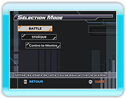

17 |
Mode SOLO |
 |
|
Le mode SOLO propose trois différentes règles de jeu.
Choisis le type de course auquel tu veux participer puis appuie sur
● BATTLE
● STOÏQUE
● CONTRE-LA-MONTRE
Une fois que tu as choisi un type de course, choisis un personnage et son équipement. Enfin, choisis un parcours et la course peut commencer.
Le niveau de difficulté des modes BATTLE et STOÏQUE peut être modifié dans les OPTIONS.
|
 |
 |
 |